【项目介绍】发布平台
项目背景
公司现有的发布平台（简称老平台）使用Python的Django框架开发，随着业务量的提升，逐渐的出现的性能问题（发布高峰期接口返回明显时间大大的增加）
而老平台由于初期的架构设计已经日积月累的代码补丁，修复老平台代码变得异常困难。
我们先看看老平台有哪些问题
老平台架构
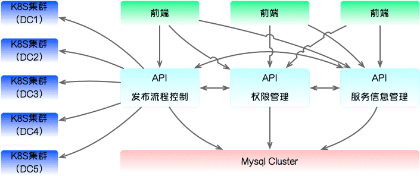
服务信息管理模块
管理服务的相关信息（名称，应用类型，打包命令，启动命令，停止命令，容器配置，人员配置，发布配置）
发布流程控制模块
管理发布任务的流程：
创建任务 -> 前置检查 -> 打包 -> 创建或者更新容器 -> 服务启动检查 -> 完成任务（回滚）
权限模块
管理人员信息，以及人员和项目的愿权限关系
问题一：所有服务直接访问mysql
一开始这样其实也没什么大问题，毕竟系统都是一步一步做的，最初业务量不大的情况下，直接访问mysql，开发效率要高一些。
但是业务量的逐渐增加问题就来了，表越来越大，sql查询越来越慢，系统也越来越慢。
问题二：三个服务职能没有分的很开
服务信息管理存了服务的人员信息，权限模块也存储了人员信息，两者通过同步的方式来保证一致性。
服务的容器配置（容器数量，cpu，memory，hpa等），在发布流程控制和服务准入里面都有，也是通过同步的方式来保证一致性。
愿景都是美好的，我们通过同步的方式来相互同步信息，但是随着时间的推移，出现了大量的脏数据，清理花了我们很长时间，找问题也花了很长时间，反反复复的修改了好次。
最终起了一些定时任务，每天夜里定时全量同步。但是并没有解决问题，因为白天产生的不同步的问题，依然会给服务方带来不便。
问题三：各个模块之间直接通过http接口相互调用
一个接口有问题，整个平台GG。
直接使用ip端口调用，服务水平扩展成了幻想。
服务器故障，迁移如登天。
做过一些优化：
- 服务内部同步域名访问
- 服务上面加一层 nginx模块作为代理，实现的服务能够水平扩展
问题四：前后虽然分离了，但是很多业务逻辑出现在了前端
比如， dev环境自动发布是由前端触发的；应用的容器列表，通过前端刷新了之后更新到后端
说的好听些是前后端分离的架构，其实还不如不分离，维护成本大大的提升，还有没有带来收益。
问题五：多个k8s集群直接调用
- 每次都要根据不同的机房加载k8s config
- k8s接口接口复杂，对于开发有学习成本
新平台优化
新平台架构
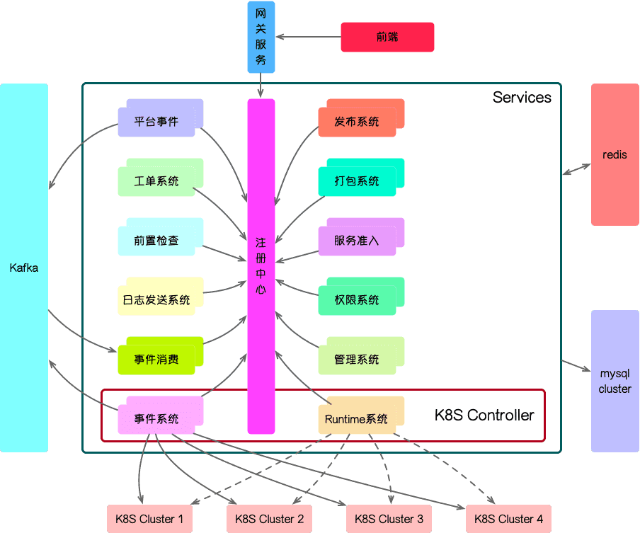
优化一：将原来的3个服务拆分成了13个微服务，同时添加服务注册中心
- 发布系统：发布流程管理，容器配置管理
- 打包系统：打包配置管理，完成发布的打包任务
- 服务准入：服务的基本信息
- 权限系统：管理用户的权限
- 管理系统：管理员后台系统，用于一些系统配置，比如添加jar版本检查，添加维护规则，添加白名单等
- 平台事件：搜集平台的事件写入MQ，比如应用开始发布，应用权限修改，应用信息修改，重启容器，销毁容器等等
- 工单系统：管理流程审批
- 前置检查：发布前检查当前发布是否可以进行
- 平台事件发送系统：从MQ读取事件，更具配置发送到指定的钉钉群
- 事件消费：这里的事件是K8S的事件和上面的平台事件是不一样的，改逐渐主要消费K8S产生的Pod， Deployment，HPA的事件
- 事件系统：生产K8S的变更事件
- Runtime：K8S controller复杂封装K8S接口
架构支持服务自动水平扩容；
注册中心有失败重试的机制，一个服务有问题，会尝试调用其他节点；
优化二：在K8S上加了一层
没有什么问题是加一层解决不了的，如果有，就加两层
我们有多套K8S集群，之前是直接调用K8S的接口的，每个集群都是单独一个client。
加了runtime之后，runtime对K8S的接口进行了二次封装，平台内部不需要在管理各个K8S集群的client，直接调用RunTime服务就好。
优化入参和返回值，符合系统整体的标准。
整合一个底层接口，一个接口完成一套业务。
优化三：K8S事件和平台事件接入MQ
防治了因为接口调用失败，导致的事件丢失
平台事件可以提供给他部门使用
当K8S产生大量事件的时候，MQ启动很好的消峰作用
优化四：添加redis缓存
所有服务添加缓存机制，大大的加快的查询的速度，同时也大大的减小的mysql的压力
优化五：mysql各个系统独立的database，读写分离。
各个系统独立database互不影响
读写分离，同时提升了读和写的效率
优化六： 统一的网关服务暴露restful接口
各个服务只需要编写RPC方法就好，由网关服务统一进行restful和RPC的转化。
有待继续优化
- DB上层应该要再加一层DB连接控制层
- session虽然做了redis缓存，但是不应该用mysql存储，直接放在redis里面就好了
- redis只要string的数据类型，其他同的信息可以用不用的类型存储
- k8s事件只写到了一个分片里面，因为消费事件需要是有续的，所有分片，多个消费者的情况下就变得无序了
总结
其实新平台的架构并不是很先进，也就是常规的微服务的架构。
在cache，DB，MQ的选型上并没有花太多功夫，主要考虑了自己熟悉的服务。
系统是一步一步迭代的，老平台 -> 新平台 的优化，主要是针对老平台的缺点来的，新平台应该也会有一些问题。
我只一步一步的走，但当前平台又不能处理现有的业务场景的时候，就是考虑下一代架构的时候了。
附上一些系统图片
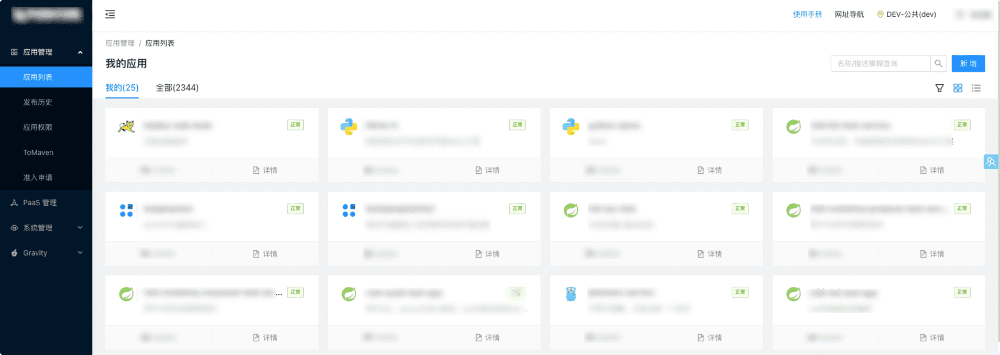
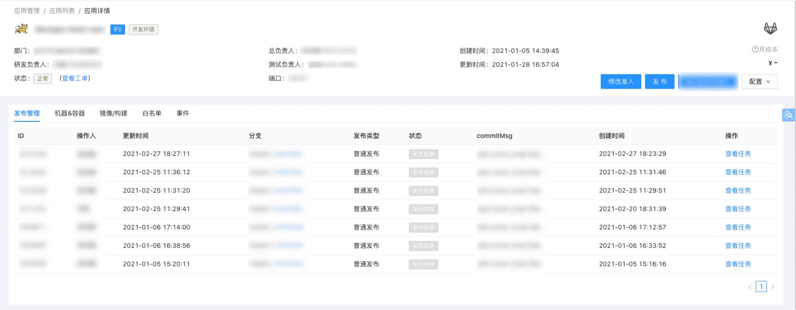
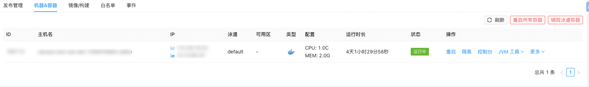
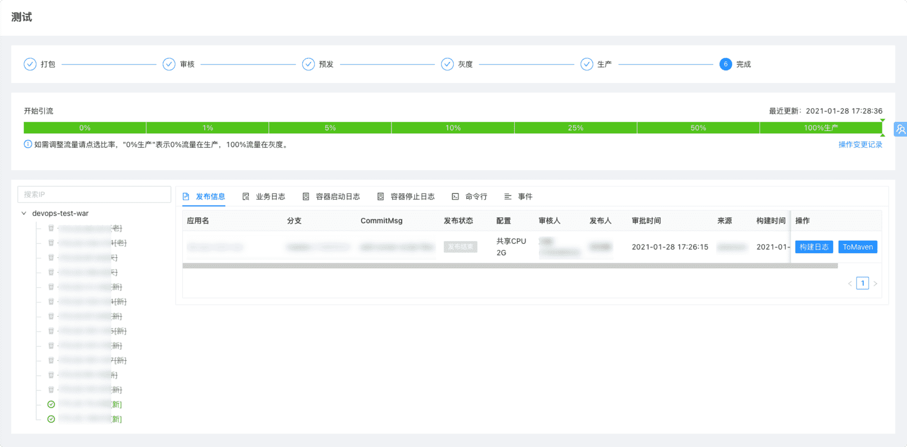
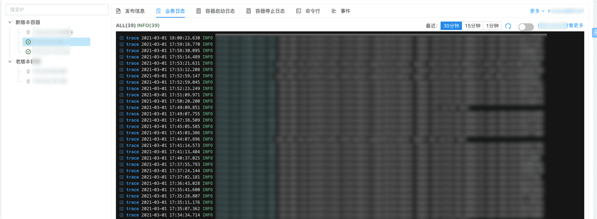
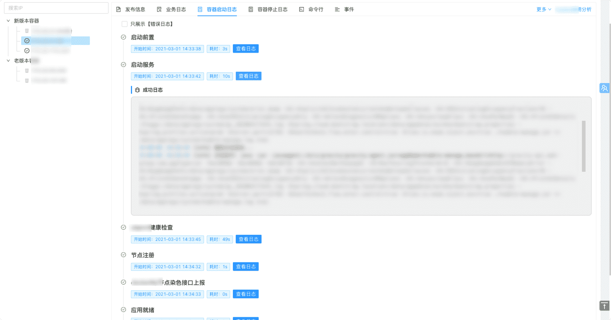
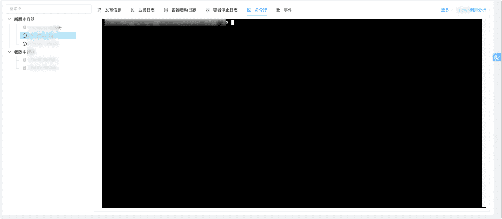
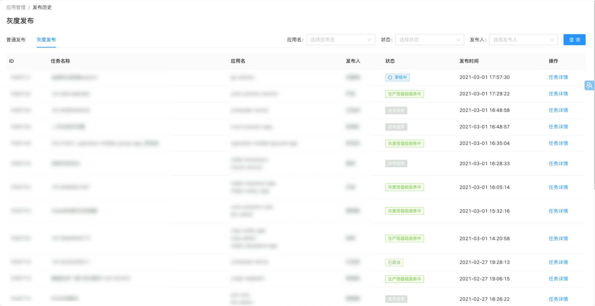
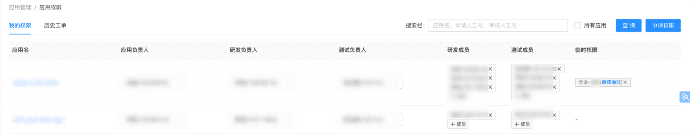